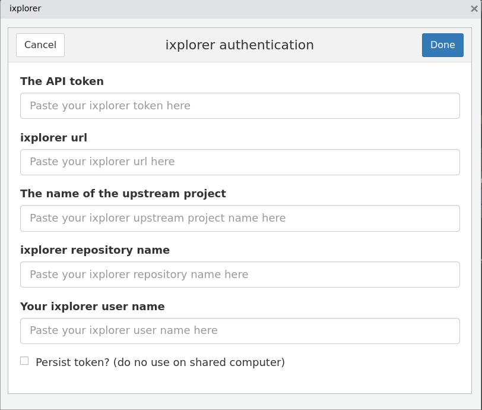

ixplorer gadgets
ixplorer gadgets are a way to create and check your project tickets without leaving RStudio and more important: without interrupting your workflow.
How to use the ixplorer gadgets
First you have to install the ixplorer package:
When you are done with the installation, you will see three options under the IXPLORER header, in the Addins menu:
- Authenticate
- Create ticket
- Current tickets
- ixplorer dashboard

Authenticate gadget
This is the first step in order to be able to create tickets or check you project tickets with the ixplorer gadgets. You will need an API key (provided by your project manager).

At the ixplorer url make sure to include the internet address of your ixplorer repository. It will be similar to: https://ixplorer_name.ixpantia.com/
The next step is to fill the name of the upstream project. This is the project where the source version of the repository resides. From this source you, and other members of your team, will have forked your own clone of this repository to make changes and propose pull requests. In our workflow we manage all the tickets centrally in the upstream project. Any tickets that you create in your personal fork will not be visible through the ixplorer gadget (and in general we recommend not to work with personal tickets).
At the ixplorer repository name please write the name of the specific repository where we are going to work with in the current RStudio project that is active.
Finally you have to speficy your user name in the section ixplorer user name This is the same user name that we use to access to the ixplorer environment.
There is an persist token option. If you are working in your personal computer, you can select this option. It will keep a copy of all your authentication data in a local file to reuse it the next time you open the project in RStudio. Otherwise you will have to authenticate each time that you are going to work on the same project.
Be careful because if you are working in somebody else’s computer, your personal authentication data is going to be stored on that machine. If you are going to work on a shared or public computer, it it best to leave the persist token option without a checkmark.
How the .ixplorer looks like?
At the end of your authentication through yout authentication gadget, a resulting ixplorer file with your credentials will look like this:
IXTOKEN= 08864824783ec0b589101191f65e643e54c8ad76c IXURL= https://ixplorer_name.ixpantia.com/ IXPROJECT= your_project_name IXREPO= your_repo_name IXUSER= your_user_name
Every time you use the other gadgets, they are going to check this .ixplorer file and make this credentials part of your session environment variables.
If you use the function Sys.getenv() you are going to be able to see this credentials with the IX names on it.
Create ticket gadget
At this point you should have all your authentication process done. If that is correct you will to be able to create a ticket without getting out of RStudio!
If everything is okay, you are just going to see the ticket title and Description section. If not, you are going to see a text warning you what is missing.

In this gadget you can create a ticket without loosing your workflow and ideas. If you came up with a new ticket (wish/improvement/question) you can go to Addins > Create ticket and under the ticket title write the title of your new ticket and under the Description section write your idea.
This ticket is going to appear on your ixplorer repository open tickets
Current tickets
This gadget is designed to give you a quick overview of active tickets and their status. Also you will find some quick links that will take you to the ixplorer if you want to check details such as ticket comments or make changes like due dates of assignments.
At the first tab My tickets, you are going to be able to check the tickets assigned to you with the number id that also is a quick link to the ticket on your ixplorer environment. Also you will see a column with the number of days left (on green) or days passed the due date (red).

On the second tab Team tickets you will see all open tickets related to the current (active) project, not just the ones assigned to you. The ID number is a quick link to the complete ticket on your ixplorer and the Due column is the days left on green for the due date or red if the due date was missed.

Finally the Quick links you have the links to the principal components of your project repository, so you don’t have to type to much in your browser to find a specific direction.
This quick links will allow you to find faster specific details of your project repository as closed tickets, milestones, the wiki, or the project place where all the repositories concerning to the project are.